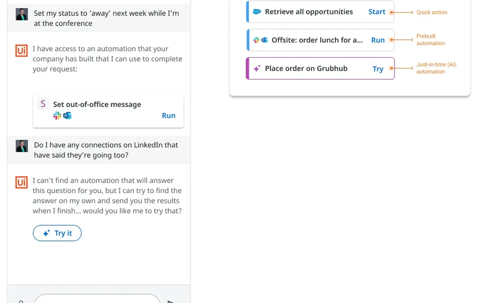
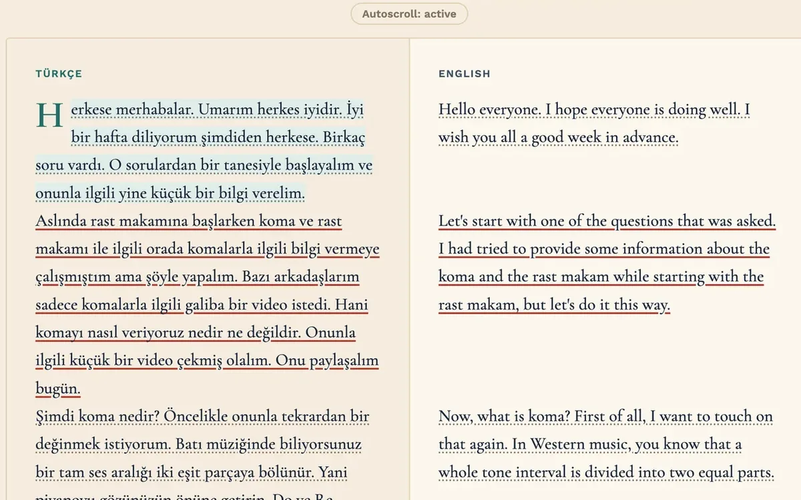
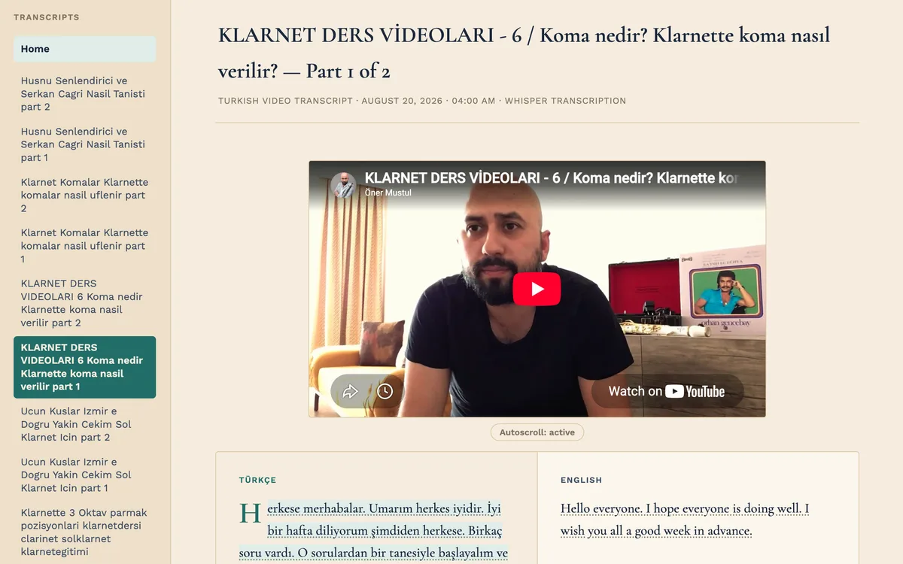
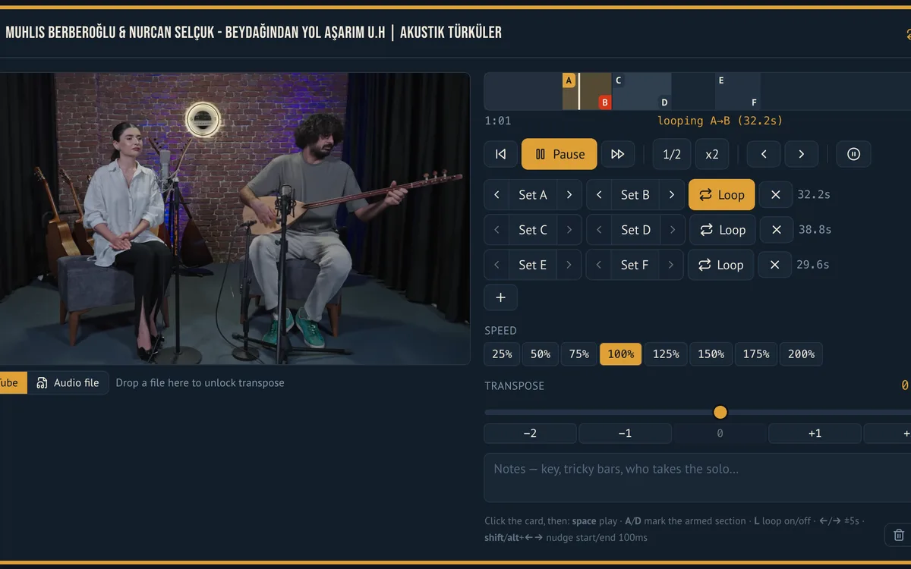
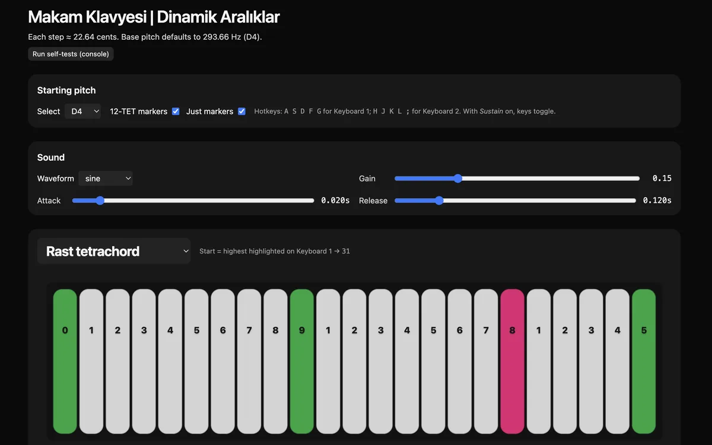

I design AI products people can trust.
Agents that show their work, flag when they're unsure, and fit into real workflows.
I'm Shaun Burley, a product designer with 5+ years of experience. As a senior product designer at UiPath, I designed an AI assistant for enterprise automation, from first concept to a live demo at the UiPath Forward conference. Today I design and build my own AI tools in code.
At UiPath I designed AI assistant and enterprise automation experiences, and helped build and run a design system that supported more than a dozen products and helped designers at acquired companies reskin their products to fit the suite. Before that I worked on enterprise SaaS research and design, and on interfaces for portable medical devices, where a misread screen has real consequences.
I came to design from music. I earned a bachelor's degree in music and worked as a professional musician before graduate school in human-computer interaction.
How I design AI
Five principles from my own work on agents that work alongside people.
-
Show the work.
People should always know what the agent is doing and what's left. Let them open up the steps when they want detail, and keep them out of the way when they don't.
-
Say how sure you are.
Mark confidence plainly, and label experimental features as experiments. Honest uncertainty earns more trust than false confidence.
-
Make the hand-off clear.
At every moment, it should be obvious whether the person or the agent is in charge, and what the person needs to do next.
-
Respect people's attention.
People have other work to do besides watching an agent run. Ask for setup once, confirm when the job is done, and make the results easy to find.
-
If you teleport them, you owe them the way back.
When the system moves people somewhere they didn't navigate themselves, it takes responsibility for getting them back. A document an AI assistant creates in a chat shouldn't only be findable through that chat. Show the path, or make the destination findable without relying on memory.
2024 to now
Since my last product design role, I've returned to professional music alongside self-directed study in AI. That time has made me a more hands-on designer, and much more fluent with AI.
- Machine learning and LLMs. In early 2024 I completed MIT Professional Education's Applied Generative AI for Digital Transformation, covering machine learning basics and working with LLMs in industry, including fine-tuning.
- Performing. I founded a Balkan brass band, perform with it professionally, and designed and built its website.
- Turkish music and language. I'm studying Turkish music and the Turkish language, extending my practice into a new musical tradition.
- Clarinet method book. I'm co-authoring a method book on folk ornamentation for the clarinet with Milan Milosevic, to be published as an ebook and a companion website.
- AI tools I designed and built. In 2025 I started building my own software with AI to support my studies. The main one is a Turkish voice transcriber that turns recorded speech into an interactive study report.
Writing a method book means taking something experts do by feel and turning it into steps a learner can follow. That's the same work I do in product design. Building my own AI tools taught me, firsthand, where these systems earn trust and where they lose it.
Case studies
-

Designing for uncertainty An AI assistant that tells people how confident it is, lets them see each step it takes, and labels experimental actions honestly. From concept to CEO and CTO review and a conference demo. -

Turkish voice and video transcriber An AI study tool that turns Turkish audio into side-by-side Turkish and English study pages, with a transcript that follows the video.
Archive
Older projects are on their way here, including interfaces for a portable medical device, enterprise SaaS research and design, and a design system that supported more than a dozen products.
Until then, the case studies show my most recent work.
AI-assisted projects
Tools I've designed and built, each for a real problem in my own work as a musician and learner.
-

Turkish transcriber
Turns Turkish lessons and voice messages into side-by-side study pages.
-

Setlist practice
One shared page per show, so my ensemble hears every song's source recording in the key we play it, with loops and slow-down for practice.
-

Makam keyboard
A 53-tone synthesizer for training my ear to hear the microtonal intervals of Turkish makam music.
CV
Shaun Burley
Summary
Product designer with 5+ years of experience designing complex, human-centered products. I design AI products people can trust: agents that show their work, flag when they're unsure, and fit into real workflows. I prototype in code, and I bring a background in professional music and HCI research.
Experience
Independent design and AI projects
- Designed and built AI study tools in code, including a Turkish voice transcriber that turns recorded speech into interactive reports with transcription, translation and audio playback.
- Designed and built music practice tools: a shared setlist practice app for an ensemble and a 53-tone makam keyboard for ear training.
- Completed MIT Professional Education: Applied Generative AI for Digital Transformation (2024).
Professional musician
- Founder and leader, Balkan brass band; designed and built the band's website.
- Co-author, with Milan Milosevic, of a method book on clarinet folk ornamentation (in progress).
- Ongoing study of the Turkish language.
Senior Product Designer, UiPath
- Primary designer of an AI assistant for enterprise automation, from first concept to CEO and CTO review and a live demo at the UiPath Forward conference (2023).
- Designed confidence indicators, show-on-demand agent steps and honest labels for experimental AI actions, helping people trust automation they couldn't see.
- Helped build and run a design system that supported more than a dozen products and helped designers at acquired companies reskin their products to fit the suite. Created reusable components, interaction patterns and documentation, following WCAG accessibility guidelines.
- Wrote design principles and guidelines for agents that work alongside people, and shared them with client automation developers.
- Partnered with product managers, engineers and UX research across discovery, research synthesis, interaction design and prototyping; co-ran a week-long design sprint.
Interaction Designer, Bresslergroup
- Designed digital and physical interactions for medical devices and wearables with industrial designers, researchers and engineers.
- Contributed to projects for clients including Bose and the U.S. Military, balancing usability, safety and technical constraints.
Education
Master of Human-Computer Interaction, Carnegie Mellon University
UX Design Immersive, General Assembly
Bachelor of Music, DePaul University
Applied Generative AI for Digital Transformation, MIT Professional Education
Skills
Research: contextual inquiry, journey mapping, personas, service blueprinting, heuristic evaluation, usability testing, stakeholder facilitation.
Design: interaction and UI design, design systems, accessibility (WCAG), wireframing, prototyping, Figma, Sketch, Adobe Creative Suite.
Code and AI: HTML, CSS, JavaScript, React, Angular, Python; building with AI coding tools such as Claude Code; Whisper and GPT APIs.